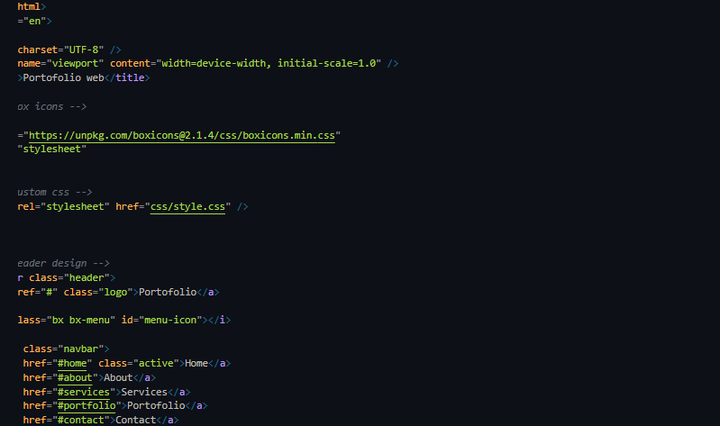

Proyek Terakhir

Project web login
Ingat, file HTML dan CSS harus berada dalam satu folder yang sama untuk memastikan keduanya dapat terhubung.Sebagai catatan, jangan menggunakan spasi untuk memberi nama folder. Sebab, spasi memungkinkan terjadinya error. Alih-alih spasi, pakailah tanda penghubung seperti hyphen (-), underscore (_), dan lain-lain.
